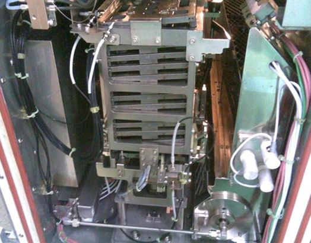
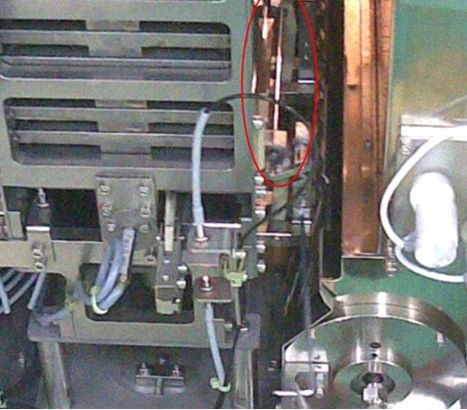

Service History
Subject: Soak Boat down error
Handler Model: TR60 (S/N:121175) NEC
Controller: RC520 ( S/N: 01-20947) 3 DU
Date: 31 May 2008
Symptom
Soak boat down error.
Action
31 May 08 update for NEC TR60:
- Output arm Hand A's ball spline shaft(black colour) replacement from
the good Output Hands assembly that I had carried.
- No calibration of output Hand A
- Output and Input Hand A airtubings(translucent) replacement as the
existing tubing surface worn out due to rubbing
- Output & Input Hands air filter cleaning
- Dummy device TSSOP8 on quad sites run and alignment(for Auto3 & Fix3)
- "Device place error(Error 3, Unit 5), There is no IC on output
shuttle" and Hand A or Hand B Device pickup error at output shuttle.
Devices were either not sitted properly in pockets or missing.
Remedies:
1) Index Arm release height to output shuttle adjustment:
=>Arm1 release height to shuttle: -30.60mm, Arm 2 release
height to shuttle: -30.40mm
2) Adjust Index counter air on time to 0.35
3) Adjust Output Shuttle Speed for Out to 65%, Output shuttle In to 85%.
- The 2 metal suction pickup heads that I hand carried not used and
keep as spare by Wan.
- Production run for TSSOP8 Hot 128 degC for device lot size 13.7k
- Device place error(Error 3, Unit 5), There is no IC on output
shuttle" and Hand A or Hand B Device pickup error at output shuttle.
The above 3 remedies were applied.
- "Soak boat down error(input inside). Soak boat could not be down."
Error 4 Unit 17.
- Press [Chamber Door Open] button, wait for software auto trigger
purge hot air, fan off and message for chamber door to open.
- Open Input Soak Chamber door, found soak boaks tilted in Y
direction, see "Soak boat down error.jpg".

- make soak boats sit properly, grease the two vertical push up /
lower down round shafts.
- resume production, during the process of Cleanout, "Soak boat down
error(input inside). Soak boat could not be down." Error 4 Unit 17
occurred.
- Open chamber door again by[Chamber Door Open] operation , make soat
boats sit properly. Use SPEL CT, select robot 10, use P21:Z0 and
P23:Z0 to check move up and down motion of soak boats.
- Grease the fingers chuck clamping mechanism, see "Fingers.jpg"

- Production run for another lot of device for TSSOP8 Hot 128 degC
- Device place error(Error 3, Unit 5), There is no IC on output
shuttle" and Hand A or Hand B Device pickup error at output shuttle
just after placement of few devices to Auto3
- Device place error(Error 3, Unit 5), There is no IC on output
shuttle"frequently, missing devices at Output Shuttle.
Remedies:
1) Index Arm release height to output shuttle adjustment:
=>Arm1 release height to shuttle: -30.65mm, Arm 2 release
height to shuttle: -30.45mm
2) Adjust Index counter air on time to 0.4
- monitor production
PG #1(Hand A and B up/down for Input & Output Hands)
PG #2(For Soak Robot 8, 9, 10 & 11)
Cause